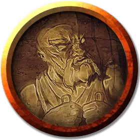

Дуэргарский крикун
Duergar Screamer
Средний Конструкт, законно-злой

Класс Доспеха 15 (природный доспех)
Хиты 38 (7к8 + 7)
Скорость 20 футов
| мод | спас | ||
|---|---|---|---|
| СИЛ | 18 | +4 | +4 |
| ЛОВ | 7 | −2 | −2 |
| ТЕЛ | 12 | +1 | +1 |
| мод | спас | ||
|---|---|---|---|
| ИНТ | 5 | −3 | −3 |
| МДР | 5 | −3 | −3 |
| ХАР | 5 | −3 | −3 |
Иммунитет к урону яд
Иммунитет к состояниям окаменение, отравление, паралич, очарование, испуг, истощение
Чувства тёмное зрение 60 футов, пассивное Восприятие 7
Языки Дварфийский
Опасность 3 (700 опыта)
Бонус мастерства +2
Среда обитания Подземье
Особенности
Языки. понимает Дварфийский, но не может говорить на нём.
Двигатель боли. . Раз за ход, существо, напавшее на крикуна может прицелиться в дуэргара, заточённого внутри механизма. Нападающий совершает броски атаки с помехой. Попав в цель, атака наносит дополнительных 11 (2к10) урона крикуну, и механизм может ответить реакцией, применив Мультиатаку.
Действия
Мультиатака. Крикун совершает одну атаку сверлом и применяет свой пронзительный вопль.
Сверло. Рукопашная атака оружием: +6 к попаданию, досягаемость 5 футов, одна цель. Попадание: 10 (1к12 + 4) колющего урона.
Пронзительный вопль. . Крикун испускает разрушительную энергию в кубе с длиной ребра 15 футов. Каждое существо, оказавшееся в этой зоне, должно преуспеть в спасброске Силы Сл 11, иначе получит 7 (2к6) урона звуком и окажется лежащим ничком.
Описание
Дуэргарский крикун – конструкт, использующий энергию звуковой волны, способный стирать камни в порошок. Дуэргара, которого обвинили в распространении слухов или умыслов о заговоре своего начальства, лишают бороды и заключают в одно из этих приспособлений, а их продолжающиеся страдания преобразуются в псионическую энергию, которой подпитывается крикун.